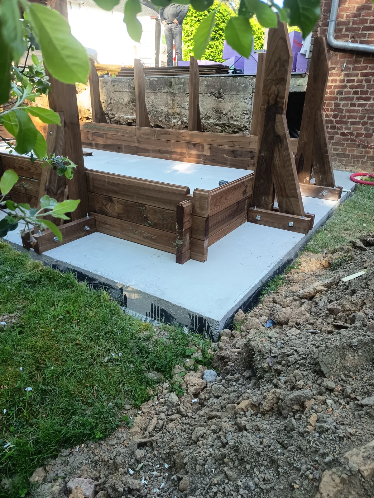
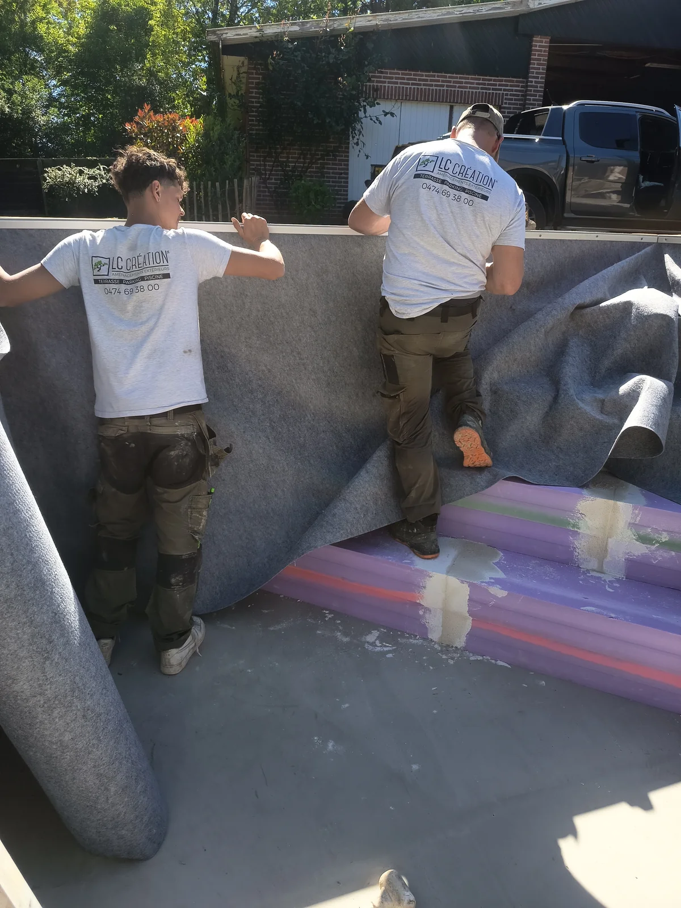
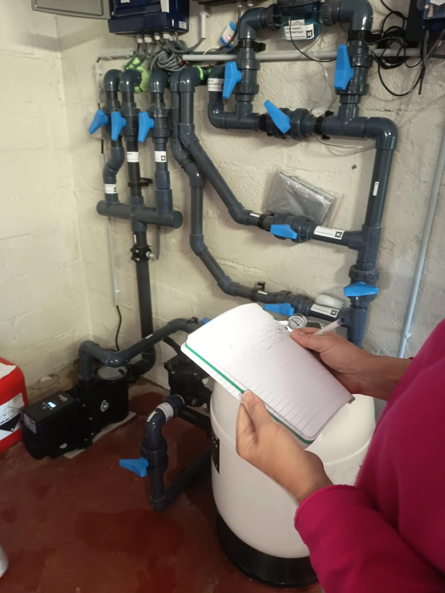

Bois premium
LC 6.3
Un format 6 × 3 m équipé, avec volet PVC manuel, pompe à chaleur et escalier intégré.
25 900 € TVAC
Découvrir LC 6.3Piscines et aménagements extérieurs
Du bassin à la terrasse, un seul interlocuteur pour donner vie à votre projet.
LC 6.3 · 25 900 € TVAC
6 × 3 m · Volet PVC manuel et pompe à chaleur inclus.
Prix en conditions standards. Aménagements sur devis.

Choisir votre piscine
Le choix dépend de vos envies, du terrain et de l’ensemble des aménagements à réaliser.
Bois premium
Un format 6 × 3 m équipé, avec volet PVC manuel, pompe à chaleur et escalier intégré.
25 900 € TVAC
Découvrir LC 6.3
Collection Bali
Une piscine bois et une ambiance paysagère définies avec vous.
À partir de 29 990 € TVAC
Visuel d’illustration.
Découvrir BaliÉtude sur mesure
Votre terrain. Vos dimensions. Votre projet.Béton sur mesure
Dimensions, implantation, escalier et abords étudiés pour votre terrain.
Sur étude personnalisée
Découvrir le bétonAutre dimension en bois ? Explorer les autres formats et packs
L’offre LC 6.3
25 900 € TVAC
Terrassement standard, dalle, bassin, volet PVC manuel, pompe à chaleur, filtration, pose et mise en service.
Comparer les structures
La qualité du projet dépend aussi de sa préparation et de son intégration au terrain.
| Votre choix | Bois premium | Béton sur mesure |
|---|---|---|
| Dimensions | Formats et packs proposés, dont LC 6.3. | Dimensions définies dans l’étude. |
| Implantation | Hors-sol, semi-enterrée ou enterrée selon le modèle et le terrain. | Implantation et structure étudiées pour le terrain. |
| Finitions | Habillage, margelles, liner et abords à coordonner. | Revêtement, escalier, margelles et abords à définir. |
| Budget | Offres de référence et options identifiées. | Chiffrage personnalisé selon le périmètre. |
| Le point commun | L’étude des accès, des niveaux et des équipements, avec la possibilité de réaliser tout l’aménagement extérieur. | |
Notre méthode en images
Les étapes qui donnent forme à votre piscine, puis à son intégration dans le jardin.

L’implantation, les niveaux et les accès sont étudiés avant l’ouverture du terrain.

Le support est préparé, puis la structure est assemblée et contrôlée.

Les surfaces intérieures sont préparées avant la pose du revêtement.

Le liner est installé et ajusté à la configuration du bassin.

Filtration, vannes et commandes sont organisées pour rester accessibles.

Nous contrôlons le fonctionnement et expliquons les gestes du quotidien.
Margelles, habillage et raccords avec les abords terminent l’ensemble.
Notre méthode en images. Photographies de plusieurs interventions LC Création.

Un seul projet
Les niveaux, les circulations et les matériaux autour de la piscine sont pensés avec elle. Nous pouvons aussi réaliser les allées, les accès et les aménagements paysagers.
Avant de vous lancer
Oui, selon le modèle, la structure et le terrain. L’implantation doit intégrer un support adapté, une protection périphérique et la gestion de l’eau autour du bassin.
Chaque offre distingue la piscine et ses travaux inclus des aménagements complémentaires. Terrasse, végétalisation, éclairage ou accès sont précisés dans votre devis.
Nous expliquons l’utilisation de l’installation. Le Pack Sérénité permet ensuite d’organiser un suivi annuel selon les prestations convenues.
Comprendre le Pack SérénitéPrésentez votre terrain, votre budget et vos envies. Nous vous aidons à comparer les solutions adaptées à votre projet.
Parler de mon projetLC Création · Grez-Doiceau et Brabant wallon
Piscine, terrasse, niveaux et finitions : présentons ensemble les contours de votre extérieur.